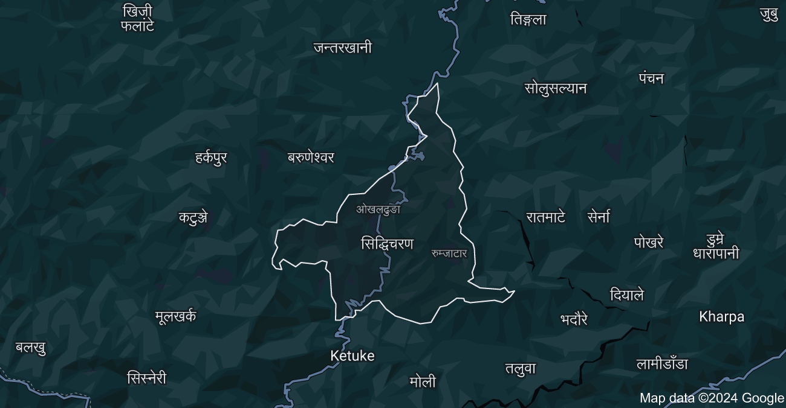

ओखलढुङ्गा जिल्ला नेपालको पूर्वाञ्चल विकास क्षेत्रको सगरमाथा अञ्चलमा पर्ने पहाडी जिल्ला मध्ये एक हो। पूर्वदेखि पश्चिमतर्फ क्रमश फराकिलो हुँदै गएको यस जिल्लालाई तीन तिरबाट नदीले छुट्याएको छ। उत्तरमा सोलुखुम्बु जिल्ला, दक्षिणमा उदयपुर र सिन्धुली जिल्लासँग जोडिएको यस जिल्लालाई पूर्वमा खोटाङ जिल्लासँग दुधकोशी नदीले र पश्चिममा रामेछाप जिल्लासँग लिखू नदीले छुट्याएको छ। नेपालका ७५ जिल्ला मध्ये जनसङ्ख्याको हिसावमा ५९ औँ स्थान र क्षेत्रफलको हिसावले ६८ औँ स्थान ओगट्ने यस जिल्लाको कूल भूभाग मध्ये सदरमुकाम ओखलढुङ्गा बजार(सिद्धिचरण नगरपालिका)बाट थोरै क्षेत्र पूर्वमा र धेरै क्षेत्र पश्चिममा पर्दछ। युगकवि सिद्धिचरण श्रेष्ठको जन्म भूमि समेत भनेर चिनिने यस साहित्यिक उर्वर भूमिमा अभिरवंशी गोपालवंशी एवं किराँत वंशी राजाहरूले राज्य गरेको पाइन्छ। वि.सं २०१८ सालको प्रशासनिक विभाजन पूर्व हालका सोलुखुम्बु, ओखलढुङ्गा र खोटाङ जिल्लाहरू पूर्व ३ नम्बर ओखलढुङ्गामा पर्दथे।शेर्पा जाति पनि धेरै छन्।शेर्पा जातिले यस ठाउँमा धेरै नै विकसित भएको छन।
अक्षांश: २७ डिग्री ६ देखि २७ डिग्री ३२ उत्तर
देशान्तर: ८६ डिग्री १० देखि ८६ डिग्री ३२ पूर्व
सिमाना: पूर्व-दुधकोशी नदी खोटाङ, पश्चिम-लिखू नदी रामेछाप, उत्तर-सोलुखुम्बु, दक्षिण-सुनकोशी नदी उदयपुर र सिन्धुली
क्षेत्रफल: १,०७४ वर्ग किलोमिटर (१,०५,८६४ हेक्टर)
उचाई: समुन्द्र सतहबाट ३९० मिटरदेखि ३,६२७ मिटर सम्म
सबभन्दा होचोठाउँ: जोर्तीघाट, (३९० मिटर) थाक्ले
सबभन्दा अग्लोठाउँ: लाम्जेडाँडा (३६२७ मिटर) पात्ले
सदरमुकामको उचाई: १,८४९ मिटर

जाति, भाषा र सस्कृति
मगर, सुनुवार , राई, लिम्बु, गुरुङ, तामाङ, शेर्पा, घर्ती, भुजेल, नेवार, क्षेत्री, बाहुन, कामी(विश्वकर्मा), दमाई(परियार), थापा आदि,भाषा
सुनुवार (कोँइच), राई, गुरुङ, शेर्पा, तामाङ, आदिसस्कृति
सुनुवार, राई, गुरुङ, शेर्पा, तामाङ आदि
भौगोलिक विभाजन
मनोरम ओखलढुङ्गा डाँडाकाँडा, भिरपाखा, खोल्साखोल्सी, वनजङ्गल, टारबेसी आदि विविधतायुक्त धरातलीय स्वरूप भएको यस जिल्लालाई मुख्य रूपमा तीन भागमा विभाजन गर्न सकिन्छ। बेसी क्षेत्र ओखलढुङ्गा जिल्लाको क्षेत्रफलको १५% अर्थात १६१ वर्ग किलोमिटर क्षेत्रफल ओगट्ने यस क्षेत्रमा कम उचाईमा रहेको नदी र खोला किनारका भू-भागहरू पर्दछन। यस क्षेत्रमा मानिसहरूको मुख्य पेशा कृषि भएता पनि फलफूल खेती तरकारी खेती पशुपालन माछा मार्ने आदि काम पनि यस क्षेत्रका मानिसहरूले गर्दछन। मध्य पहाडी क्षेत्र मनोरम ओखलढुङ्गा मध्य पहाडी क्षेत्रले जिल्लाको कुल क्षेत्रफलको ६५% अर्थात ६९८ वर्ग किलोमिटर क्षेत्रफल भू-भाग ओगटेको छ। सदरमुकाम ओखलढुङ्गाका साथै रुम्जाटार पनि यसै क्षेत्रमा पर्दछ। यस क्षेत्रमा धान, मकै, गहुँ, कोदो, फापर, तोरी, तरकारी, फलफूल खेती, पशुपालन आदि गरिन्छ। लेकाली क्षेत्र मनोरम ओखलढुङ्गा जिल्ला कुल क्षेत्रफलको २०% अर्थात २१५ वर्ग किलोमिटर क्षेत्रफल ओगटने यस क्षेत्रमा पातलो बस्ती पाइन्छ। यहाँको अधिकांश भू-भाग भिरालो र चट्टानले भरिएको छ। यस क्षेत्रमा पातलो मकै, आलु, जौ, गहुँ, उवा, स्याउ आदिको खेती गरिनुका साथै भेडा र चौंरी पालनको कार्य समेत गरेको पाइन्छ। जल सम्पदा प्रमुख नदीनालाहरू दूधकोशी नदी, सुनकोशी नदी, लिखु (लिकु) नदी, बुकु खोला, भुसुने खोला, पेलु खोला, चोकती खोला, साल्पुखोला, मोलुङ्गखोला, ठोटनेखोला, सिस्नेखोला, सेर्नाखोला, बाङ्गेखोला, खानीखोला, ढाँडखोला, पङ्खुखोला, लिपेखोला, साल्पूखोला, डुँडेखोला, जुंगेखोला, चोक्टीमङ्गलाखोला, अँधेरीखोला, पातालेखोला, सेप्लीखोला, खार्तेखोला ,झगरपुरखोला,कुवापानी खाेला,शेरा खाेला,सिल्खु खाेला,पहेले खाेला । खिजी थोलेदेमबा खिजी थोलेदेम्बा खिजी चन्डेश्वरी गा. बि. स. फलाटे गा. बि. स., काती गा. बि. स. हरूमा पर्ने थोलेदेमबा पिक ३४४० उचैम रहेको रमणीय पिक् विभिन्न क्षेत्रबाट घुम्न आउने बिदेशिहरू पनि एस क्षेत्रमा महत्त्व दिदै आएका छन् । झरना पोकली झरना (१३१ मिटर), रातमाटे झरना (१११मिटर), प्रमुख रूपमा रहेका छन। अन्य झरनाहरूमा सेप्ली, ढिकुरे, सेर्ना, सेलेले, न्याउले आदि पर्दछन।
परिचित व्यक्तित्व
युगकवि सिद्धिचरण श्रेष्ठ कप्तान यज्ञबहादुर थापा, पञ्चायतकालका सहिद अनुराधा कोइराला रूक्माङ्गद कटवाल अगनसिंह राई, भिक्टोरिया क्रस विजेता बलराम चैनराई, पोर्टस्माउथ क्लबका मालिक[३] लीलानाथ दाहाल, पञ्चायतकालका सहिद ठगीनाथ दाहाल, पञ्चायतकालका सहिद खगेन्द्र राज दाहाल, पञ्चायतकालका सहिद गोकर्ण बहादुर कार्की, पञ्चायतकालका सहिद[४] बुद्धि नारायण श्रेष्ठ, सीमाविद् । मा.रामहरि खतिवडा,साम्सद।
पहाडले घेरिएको सुन्दर छ नि ठाउँ पोखराको नजिकै छ मेरो सानो गाउँ सफा हुन्छ हावा यहाँ, सफा छ नि पानी धेरै छन् मान्छेहरु, राम्रो छ है बानी । मन्दिर छन् धेरै यहाँ, रुख भएको ठाउँ सबै जना रमाउने, रमाइलो गाउँ सधै देख्न पाइन्छ नि सेतो, राम्रो हिमाल रामघाट गाउँ अनि देश हो नि नेपाल । घरैबाट देख्छु मैले गुम्बा अनि काहूँ सात तालको सहरमा सुन्दर मेरो गाउँ जब हिमाल मुस्काउँछ, अल्छी पनि भाग्छ साच्चै मलाई मेरो गाउँ स्वर्ग जस्तो लाग्छ ।
गाउँ एउटा यस्तो ठाउँ हो जहाँ तपाईं शान्ति, एकता, शक्ति, प्रेरणा
सबैभन्दा महत्त्वपूर्ण प्राकृतिक र सुन्दर जीवन पाउन सक्नुहुन्छ।"
सबै गाउँमा बसेर गाउँको विकास गरौँ.....।
ओखलढुङ्गा बारे थप जानकारी को लागी हामीलाई सम्पर्क गर्नुहोस्: 9862643095 तपाईलाई जब चाहानुहुन्छ हामीलाई कल गर्नुहोस्।